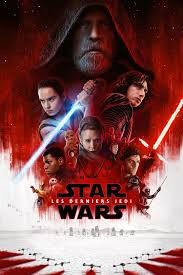
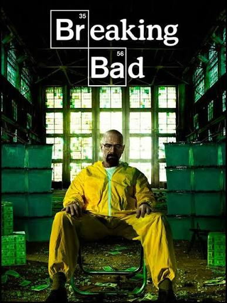
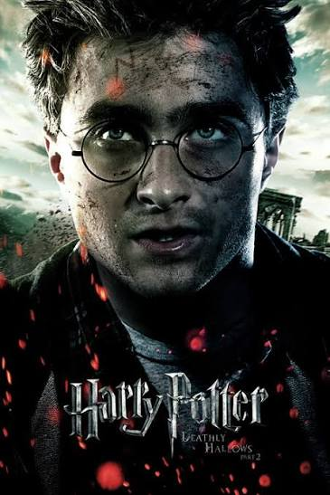

Films, séries et univers qui nous ont marqué.
| Accueil | Star Wars VIII | Breaking Bad | Harry Potter 7 |
Bienvenue sur CinéProNous avons créé ce site dans le cadre de notre projet de fin d'année en Bac Pro CIEL. Notre objectif est de présenter trois univers que nous apprécions particulièrement : Star Wars, Breaking Bad et Harry Potter. Chaque univers possède son propre style, ses personnages et son histoire. |
|
 |
Star Wars VIII : les derniers jedisGenre : Science-fiction / Aventure ⭐ Notre note : 3/5 |
|
 |
Breaking BadGenre : Drame / Crime La série suit Walter White, un professeur de chimie qui se lance dans la fabrication de drogue après avoir appris qu'il est atteint d'un cancer. ⭐ Notre note : 4,7/5 |
|
 |
Harry Potter : les reliques de la mort 2Genre : Fantastique / Aventure Dans la deuxième partie de cette finale épique, la bataille entre les forces du bien et celles du mal du monde des magiciens dégénère en une guerre tous azimuts. Les enjeux n'ont jamais été si grands et personne n'est en sécurité. ⭐ Notre note : 4,2/5 |
🎥 La Une sur CinéProDécouvrez la bande-annonce de Breaking Bad Saison 1 |
⭐ Notre classement |
|||
| Place | Univers | Type | Note |
|---|---|---|---|
| 🥇 1 | Breaking Bad | Série | 10/10 |
| 🥈 2 | Star Wars | Films | 9/10 |
| 🥉 3 | Harry Potter | Films | 9/10 |
🔗 Nos sourcesQuelques sites pour découvrir davantage ces univers : |
🎬 CinéPro
Projet Mini Site — Bac Pro CIEL — Manon CLAUDE et Yoan MACLOS